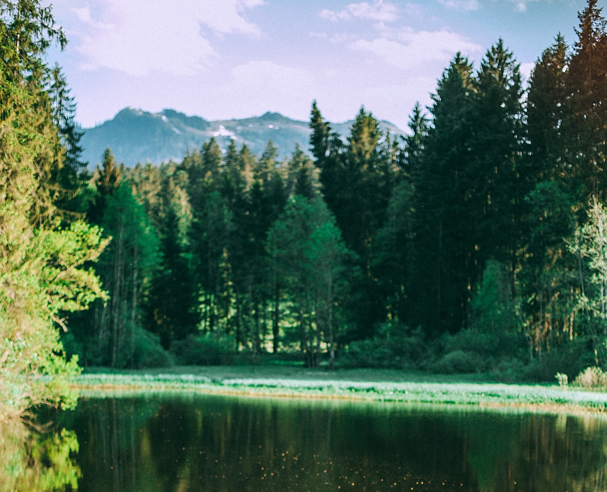

Présentation de l'association
L'association fut créee en 1971 par Robert VIOLET, qui souhaitait reprendre en main la gestion de l'étang des Tours, laissé à l'abandon depuis quelques années. Il fut rejoint par 11 bénévoles qui constituèrent le 1er bureau et dont certains sont encore à ce jour actifs. L'association gère aujourd'hui pas moins de 3 plans d'eau, l'étang des Tours (7 hectares), de la croix basse (5,5 hectares) le lac de la jonnière (12 hectares), mais également un réseau de 35 km deparcours sur les rivières et ruisseaux avoisinants (la Chaudre, la Sioule et le Lindron). Toute l'équipe est mobilisée tout au long de l'année pour assurer les opérations de réempoissonement des cours d'eau, l'entretien régulier des berges et l'aménagement des postes (plus particulièrement des personnes à mobilité réduite), mais également l'organisation de nombreux évenements tels que les concours, les initiations à la pêche pour les grands et les petits, et l'organisation de manifestations de type Loto, concours de pétanque, etc...